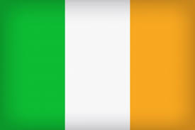
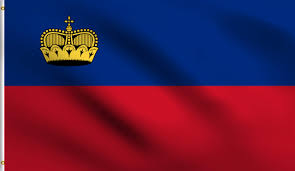
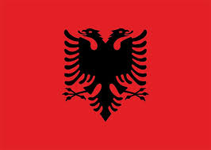
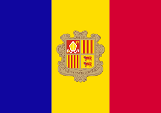
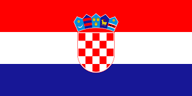
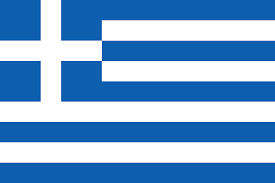
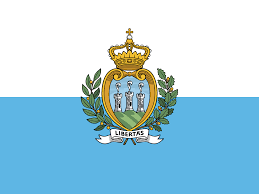
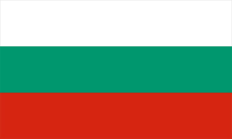

Europe is the second smallest continent by land area but has a dense population and a significant impact on global history and culture.
The continent is home to the European Union, an economic and political union of 27 countries that promotes cooperation and integration.
Europe has a rich history, with ancient civilizations like the Greeks and Romans laying the foundation for Western culture and philosophy.
It has been the birthplace of major global revolutions, including the Renaissance, the Industrial Revolution, and the Enlightenment.
The continent is known for its diverse landscapes, from the Mediterranean coasts to the Alps, and its cultural heritage sites, including UNESCO World Heritage Sites.
Europe has a highly developed economy, with some of the world’s largest financial centers, including London, Frankfurt, and Zurich.
The continent is also famous for its contributions to art, literature, and music, with iconic figures like Shakespeare, Beethoven, and Van Gogh.
Explore the Europe
Day 1: Introduction to Europe

Europe is a continent with a rich history and diverse cultures. It has many different countries, languages, and beautiful landscapes. From high mountains to big rivers and historic cities, Europe has it all!
People and Languages
Europe is home to over 740 million people who speak many different languages, like English, French, German, and Spanish.
Heroes of Europe
Many important people come from Europe. Isaac Newton from England helped us understand gravity, and Leonardo da Vinci from Italy was a great artist and inventor.
Biggest and Smallest Features
The biggest country in Europe is Russia, and the smallest is Vatican City. The tallest mountain is Mount Elbrus, and the longest river is the Volga River.
Countries
There are 45 countries in Europe, including Germany, France, and Spain. Each country has its own unique culture and attractions.
Germany


France


Spain


Did you know?
Did you know that Europe is the second smallest continent by surface area, yet it has one of the largest populations?
Did you know that the Vatican City is the smallest independent state in the world by both area and population?
Did you know that the Euro is the second most traded currency in the world after the US dollar?
Day 2: Exploring Northern Europe
Introduction to Northern Europe
Northern Europe is known for its stunning landscapes, including fjords, forests, and lakes. It has a rich Viking history and vibrant capital cities with modern architecture.
Big Cities
Copenhagen, Stockholm, and Oslo are some of the largest cities, each offering unique historical landmarks and modern attractions.
Famous Places
Northern Europe boasts breathtaking sights like the Northern Lights, Iceland's Blue Lagoon, and the Royal Palace in Oslo.
Culture
Languages like Danish, Swedish, and Finnish are spoken here. Traditional foods include herring, meatballs, and rye bread. Festivals such as Midsummer are celebrated across the region.
Heroes
Notable figures from Northern Europe include Alfred Nobel, who founded the Nobel Prizes, and Leif Erikson, the Viking explorer who reached North America.
Countries, Their Flags, and Capital Cities in Northern Europe
| Country | Flag | Capital City |
|---|---|---|
| Denmark |  |
Copenhagen |
| Estonia |  |
Tallinn |
| Finland |  |
Helsinki |
| Iceland |  |
Reykjavik |
| Ireland |  | Dublin |
| Latvia |  |
Riga |
| Lithuania |  |
Vilnius |
| Norway |  |
Oslo |
| Sweden |  |
Stockholm |
| United Kingdom |  |
London |
Denmark


Sweden


Did you know?
Did you know that Northern Europe has some of the world's happiest countries, including Finland and Denmark?
Did you know that the Northern Lights, visible in countries like Norway and Iceland, are one of the most famous natural phenomena?
Did you know that Iceland is home to the world’s first parliament, established in 930 AD?
Did you know that Sweden has more than 100,000 lakes, making it a haven for nature lovers?
Did you know that Estonia is one of the most digitally advanced countries, offering free public Wi-Fi throughout the country?
Day 3: Exploring Western Europe
Introduction to Western Europe

Western Europe is known for its rich history, cultural diversity, and iconic landmarks like the Eiffel Tower.
Western Europe has many historic cities and famous landmarks that make it a popular tourist destination.
Big Cities
Some of the biggest cities are Paris, Berlin, and Amsterdam, each offering lots of interesting things to see.
Countries, Their Flags, and Capital Cities in Western Europe
| Country | Flag | Capital City |
|---|---|---|
| Austria |  |
Vienna |
| Belgium |  |
Brussels |
| France | Paris | |
| Germany |  |
Berlin |
| Liechtenstein |  | Vaduz |
| Luxembourg |  |
Luxembourg City |
| Monaco |  |
Monaco |
| Netherlands |  |
Amsterdam |
| Switzerland |  |
Bern |
Austria

The scenic Alps, covering much of Austria.

Vienna, Austria's capital, known for its classical music and art.
Belgium

The rolling hills of Ardennes in Belgium.

The Grand Place in Brussels, the heart of Belgium.
France

The beautiful landscapes of the French countryside.

The bustling streets of Paris, France's capital.
Germany

The Black Forest, a scenic mountainous region in Germany.
Luxembourg

Luxembourg City, the capital known for its medieval fortifications.
Monaco

Monte Carlo, famous for its casino and luxury.
Switzerland

The charming city of Zurich, Switzerland's financial hub.
Did you know?
Did you know that Switzerland is home to more than 1,500 lakes?
Did you know that Monaco is the second smallest country in the world, after the Vatican?
Did you know that France is the most visited country in the world, with over 89 million tourists annually?
Did you know that the Netherlands is famous for producing around 70% of the world's commercial flower bulbs?
Did you know that Austria is known for classical music, and it's where Mozart and Beethoven were born?
You're Ready to Take the Quiz!
Head over to the home page to get started with your first quiz!
Day 4: Exploring Southern Europe
Introduction to Southern Europe
Southern Europe is known for its sunny weather, beautiful beaches, and rich history.
Southern Europe has many famous landmarks and delicious food.
Big Cities
Some of the biggest cities are Rome, Madrid, and Athens. Each city has lots of interesting things to see and do.
Famous Places
Southern Europe has many famous landmarks, like the Colosseum in Italy, the Acropolis in Greece, and the Alhambra in Spain.
Culture
People in Southern Europe speak languages like Italian, Spanish, and Greek. They celebrate festivals like Carnival in Italy and La Tomatina in Spain, and enjoy foods like pizza and paella.
Heroes
Heroes from Southern Europe include Leonardo da Vinci from Italy, who was a great artist and inventor, and Miguel de Cervantes from Spain, who was a famous writer.
Countries, Their Flags, and Capital Cities in Southern Europe
| Country | Flag | Capital City |
|---|---|---|
| Albania |  | Tirana |
| Andorra |  | Andorra la Vella |
| Bosnia and Herzegovina |  |
Sarajevo |
| Croatia |  | Zagreb |
| Greece |  | Athens |
| Italy | Rome | |
| Malta |  |
Valletta |
| Montenegro |  |
Podgorica |
| North Macedonia |  |
Skopje |
| Portugal |  |
Lisbon |
| San Marino |  | San Marino |
| Serbia |  |
Belgrade |
| Slovenia |  |
Ljubljana |
| Spain |  |
Madrid |
| Vatican City |  |
Vatican City |
Andorra

The Pyrenees mountains in Andorra.

Andorra la Vella, the high-altitude capital city.
Sarajevo, the capital city with a rich history.
Croatia

The stunning coastline of Croatia along the Adriatic Sea.

Zagreb, the lively capital city of Croatia.
Greece

Athens, the ancient capital of Greece.
Italy

The majestic Alps mountain range in northern Italy.

Rome, the historic capital city of Italy.
North Macedonia

Lake Ohrid, one of the oldest and deepest lakes in Europe.
Serbia

The Danube River flowing through Serbia.
Slovenia

Lake Bled, a scenic lake with a small island in Slovenia.

Ljubljana, the charming capital city of Slovenia.
Vatican City

St. Peter's Basilica, one of the holiest sites in Vatican City.
Vatican City, the smallest independent state in the world.
Did You Know?
Southern Europe is famous for its Mediterranean climate, which means hot, dry summers and mild, wet winters.
Italy has more UNESCO World Heritage Sites than any other country in the world.
Spain produces nearly half of the world’s olive oil, and it’s a key ingredient in the Mediterranean diet.
Day 5: Exploring Central and Eastern Europe
Introduction to Central and Eastern Europe

Central and Eastern Europe is known for its diverse landscapes, from mountains to plains, and its rich cultural heritage. It has many historic cities and beautiful architecture.
Big Cities
Some of the biggest cities are Warsaw, Budapest, and Prague. Each city has lots of interesting things to see and do.
Famous Places
Central and Eastern Europe has many famous landmarks, like the Prague Castle in the Czech Republic, the Buda Castle in Hungary, and the Wawel Castle in Poland.
Culture
People in Central and Eastern Europe speak languages like Polish, Hungarian, and Czech. They celebrate festivals like Easter Monday and enjoy foods like pierogi and goulash.
Heroes
Heroes from Central and Eastern Europe include Marie Curie from Poland, who was a famous scientist, and Franz Kafka from the Czech Republic, who was a famous writer.
Countries, Their Flags, and Capital Cities in Central and Eastern Europe
| Country | Flag | Capital City |
|---|---|---|
| Belarus |  |
Minsk |
| Bulgaria |  | Sofia |
| Czech Republic |  |
Prague |
| Estonia |  |
Tallinn |
| Hungary |  |
Budapest |
| Latvia |  |
Riga |
| Lithuania |  |
Vilnius |
| Moldova |  |
Chisinau |
| Poland |  |
Warsaw |
| Romania |  |
Bucharest |
| Russia |  |
Moscow |
| Slovakia |  |
Bratislava |
| Ukraine |  |
Kyiv |
Poland


Czech Republic

Hungary

Romania

Ukraine
Belarus


Bulgaria

Did you know?
Central and Eastern Europe is home to some of the oldest cities in Europe, including Prague and Krakow.
The Hungarian Parliament Building is one of the largest buildings in Europe.
Warsaw, Poland's capital, was almost completely destroyed during World War II and was rebuilt after the war.
Day 6: Exploring Northern Europe

A beautiful view of Northern Europe's landscape.
Introduction to Northern Europe
Northern Europe is known for its stunning natural beauty, including fjords, forests, and the Northern Lights. It has a mix of modern cities and ancient history.
Big Cities
Some of the biggest cities are Stockholm, Oslo, and Helsinki. Each city has lots of interesting things to see and do.
Famous Places
Northern Europe has many famous landmarks, like the Tivoli Gardens in Denmark, the Vasa Museum in Sweden, and the Blue Lagoon in Iceland.
Culture
People in Northern Europe speak languages like Swedish, Norwegian, and Finnish. They celebrate festivals like Midsummer in Sweden and St. Lucia's Day, and enjoy foods like smörgåsbord and gravlax.
Heroes
Heroes from Northern Europe include Alfred Nobel from Sweden, who invented dynamite and started the Nobel Prize, and Hans Christian Andersen from Denmark, who wrote many famous fairy tales.
| Country | Flag | Capital City |
|---|---|---|
| Denmark | |
Copenhagen |
| Estonia | |
Tallinn |
| Finland | |
Helsinki |
| Iceland | |
Reykjavik |
| Ireland | Dublin | |
| Latvia | |
Riga |
| Lithuania | |
Vilnius |
| Norway | |
Oslo |
| Sweden | |
Stockholm |
| United Kingdom | |
London |
Did You Know?
- The Northern Lights: One of the best places to see the Northern Lights is in Norway, especially in Tromsø!
- Viking Heritage: Many Northern European countries, like Denmark and Sweden, have rich Viking history that you can explore through museums and archaeological sites.
- Unique Languages: Finnish is considered one of the most unique languages in Europe, with no close relatives to other languages!
- Culinary Delights: Try traditional Swedish meatballs or Finnish rye bread for a taste of Northern European cuisine!
- Environmental Focus: Northern Europe is known for its commitment to sustainability and eco-friendly practices, making it a leader in green living.
Summary of Europe
Europe is a continent full of diverse cultures, languages, and landscapes. It has many different countries, each with its own unique attractions and history.
People and Languages
Europe is home to over 700 million people who speak many different languages, including English, French, German, Spanish, Italian, and more.

Map showing the distribution of major languages across Europe.
Heroes of Europe
Many important people come from Europe, such as:
- Leonardo da Vinci from Italy - A painter, inventor, and scientist.
- Albert Einstein from Germany - A physicist known for the theory of relativity.
- Isaac Newton from the United Kingdom - A physicist and mathematician who formulated the laws of motion and universal gravitation.

Leonardo da Vinci from Italy - A painter, inventor, and scientist.

Albert Einstein from Germany - A physicist known for the theory of relativity.
Isaac Newton from the United Kingdom - A physicist and mathematician who formulated the laws of motion and universal gravitation.
Biggest and Smallest Features
The biggest country in Europe is Russia, and the smallest is Vatican City. The tallest mountain is Mount Elbrus, and the longest river is the Volga River.
| Feature | Details |
|---|---|
| Largest Country | Russia |
| Smallest Country | Vatican City |
| Tallest Mountain | Mount Elbrus |
| Longest River | Volga River |
Countries
There are 44 countries in Europe, each with its own unique culture and attractions. Some of the most famous countries include France, Germany, Italy, Spain, and the United Kingdom.
| No. | Country | Flag |
|---|---|---|
| 1 | France | |
| 2 | Germany | |
| 3 | Italy | |
| 4 | Spain | |
| 5 | United Kingdom |
Fun Facts about Europe
- Europe is the second smallest continent by land area but has the third largest population.
- The Louvre Museum in Paris, France, is the world's most visited museum.
- The Euro (€) is the most widely used currency in Europe, adopted by 19 out of the 27 European Union countries.
- Iceland is the only country in the world that has no mosquitoes.
- Europe is home to the world's largest castle, the Prague Castle, in the Czech Republic.
Thank You for Exploring Europe with Us!
We hope you enjoyed this exciting journey through Europe. Remember, there's always more to discover and learn about our beautiful world!
you may take your quiz 2 but you have also to go back home to take general test and as well as exam
Now You're Ready to Take the Next Quiz!
Head over to the home page to get started with your second quiz! as well as General Test and Exam